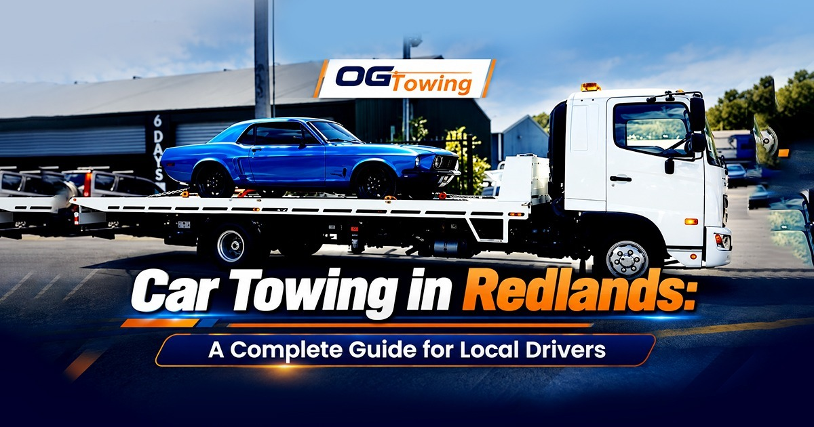

Breaking down on the road can be stressful, especially when you are stuck somewhere in Redlands and are unsure what to do next. Whether your car has suffered a mechanical failure, you have been involved in an accident, or your vehicle simply will not start, knowing when and how to arrange professional car towing in Redlands can save you time, money and unnecessary stress
OG Towing provides 24/7 towing services throughout Redlands and surrounding Brisbane suburbs, including Capalaba, Cleveland, Victoria Point, Redland Bay, Alexandra Hills, Birkdale, Wellington Point and Thornlands.
When Do You Need Car Towing in Redlands?
Not every vehicle problem requires a tow truck capalaba, but some situations are better handled by a professional towing company.
- You may need car towing in Redlands if:
- Your vehicle has broken down and cannot be safely driven.
- Your engine has suffered a serious mechanical problem.
- Your battery has failed and the vehicle cannot be restarted.
- You have a flat or damaged tyre that cannot be repaired roadside.
- Your vehicle has been involved in an accident.
- Your car has sustained suspension, steering or brake damage.
- Your vehicle is unregistered and needs to be transported.
- You need to move a non-running vehicle to a mechanic or repairer.
Trying to drive a damaged vehicle can create additional safety risks and potentially cause more damage.
For drivers who need reliable assistance, professional car towing services can provide a safer way to transport the vehicle to a suitable destination.
What Should You Do If Your Car Breaks Down?
If your vehicle stops unexpectedly, your first priority should be safety.
1. Move to a Safe Location
If possible, move your vehicle away from moving traffic. Turn on your hazard lights and remain aware of surrounding vehicles.
If you cannot move the vehicle, stay somewhere safe and avoid standing directly beside the traffic lane.
2. Assess the Problem
Check whether the problem is something simple, such as a flat tyre or flat battery. If the vehicle has suffered a major mechanical or electrical failure, avoid repeatedly attempting to drive it.
3. Contact a Towing Service
If your vehicle cannot be safely driven, arrange a professional tow. OG Towing provides 24/7 emergency towing across Brisbane and Redlands, including nights, weekends and public holidays.
You can also learn more about their emergency towing service before arranging assistance.
Read this blog- South Brisbane Tow Truck Service: Fast & Affordable Towing
4. Accident Towing in Redlands
A road accident can leave you dealing with vehicle damage, insurance companies and repair arrangements at the same time.
If your car is damaged and unsafe to drive, professional accident towing can help move it from the accident location to a repairer or another appropriate destination.
OG Towing offers accident towing and insurance towing throughout Brisbane and Redlands.
After an accident, avoid driving a vehicle if there is visible damage to important components such as the brakes, steering, wheels, suspension or structural areas.
How Much Does Car Towing in Redlands Cost?
The price of a tow can vary depending on several factors, including:
- Distance travelled
- Type and size of vehicle
- Vehicle condition
- Location of the breakdown
- Time of day
- Whether specialised towing equipment is required
- Destination of the vehicle
It is a good idea to ask about pricing before the tow begins. OG Towing states that it provides transparent pricing, while the final cost can depend on distance and vehicle type.
Choosing the Right Tow Truck Company
When looking for a towing company in Redlands, consider more than just the cheapest price.
Look for a provider that offers:
- 24/7 availability
- Fast local response
- Experienced drivers
- Appropriate towing equipment
- Clear pricing
- Safe vehicle handling
- Accident and breakdown towing
- Coverage across your local area
OG Towing says it has more than 16 years of experience and has completed more than 1,500 towing jobs, with services available throughout Brisbane and Redlands.
Areas Covered by Car Towing Services in Redlands
Redlands covers a large area, so choosing a towing company familiar with local roads can be beneficial.
OG Towing services customers in areas including:
- Capalaba
- Cleveland
- Victoria Point
- Redland Bay
- Alexandra Hills
- Birkdale
- Wellington Point
- Thornlands
The company also services Brisbane, Logan, Ipswich and surrounding South East Queensland suburbs. If you need a local car towing service, choosing a provider that regularly works throughout the area can make the recovery process easier.
What Information Should You Give the Tow Truck Driver?
When calling for a tow, provide as much information as possible.
Tell the towing company:
- Your exact location
- Your vehicle make and model
- Whether the vehicle can start
- Whether the vehicle can roll or steer
- What happened to the vehicle
- Whether the vehicle was involved in an accident
- Your preferred destination, such as a mechanic or repairer
This information can help the towing company determine what equipment is appropriate for your vehicle.
What If Your Car Is Unregistered?
If you need to move an unregistered vehicle in Queensland, the appropriate process can depend on the vehicle's condition and how it will be transported.
For vehicles that cannot legally or safely be driven, professional towing may be the most practical option. OG Towing also publishes a detailed guide covering moving an unregistered car in Queensland.
For legal and registration requirements, it is also sensible to check the latest information from the Queensland Government rather than relying solely on a towing company blog.
Why Choose OG Towing for Car Towing in Redlands?
When you need help on the side of the road, having a local towing company available around the clock can provide valuable peace of mind.
OG Towing provides towing and emergency recovery services throughout Redlands and Brisbane. The company states that it offers 24/7 service, transparent pricing and an aim of approximately 30-minute response times across Brisbane and Redlands, although actual arrival times can vary with traffic and weather.
For more information, visit OG Towing to request assistance or learn more about its towing services.
Final Thoughts
A vehicle breakdown does not have to become a major headache. By moving to a safe location, assessing the situation and contacting a professional towing provider when necessary, Redlands drivers can get their vehicles transported safely and efficiently.
Whether you need car towing, emergency towing, accident recovery or local vehicle transport, choosing an experienced towing company can make the process much easier.
If you need towing assistance in Redlands, contact OG Towing for 24/7 towing services across Redlands and Brisbane.
FAQs
Response times can vary depending on traffic, weather, your location and current
demand. OG Towing states that it aims for approximately 30-minute response times
across Brisbane and Redlands.
Yes. OG Towing provides 24/7 towing and emergency recovery services throughout
Redlands and surrounding Brisbane suburbs, including nights, weekends and public
holidays.
You should arrange towing if your vehicle cannot be safely driven, has serious
mechanical damage, or has problems with the brakes, steering, suspension or
wheels. After an accident, towing is often the safer option when the vehicle is
damaged.
Towing costs depend on factors such as the distance, vehicle type and condition,
breakdown location, time of day, equipment required and destination. Ask the
towing provider for pricing before the tow begins.
Yes. Professional towing services can transport accident-damaged vehicles from
the scene to a mechanic, repairer, storage facility or another suitable
destination.